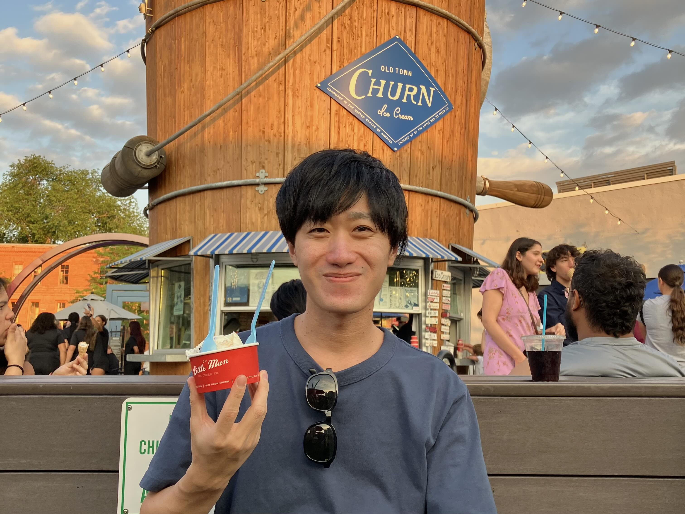
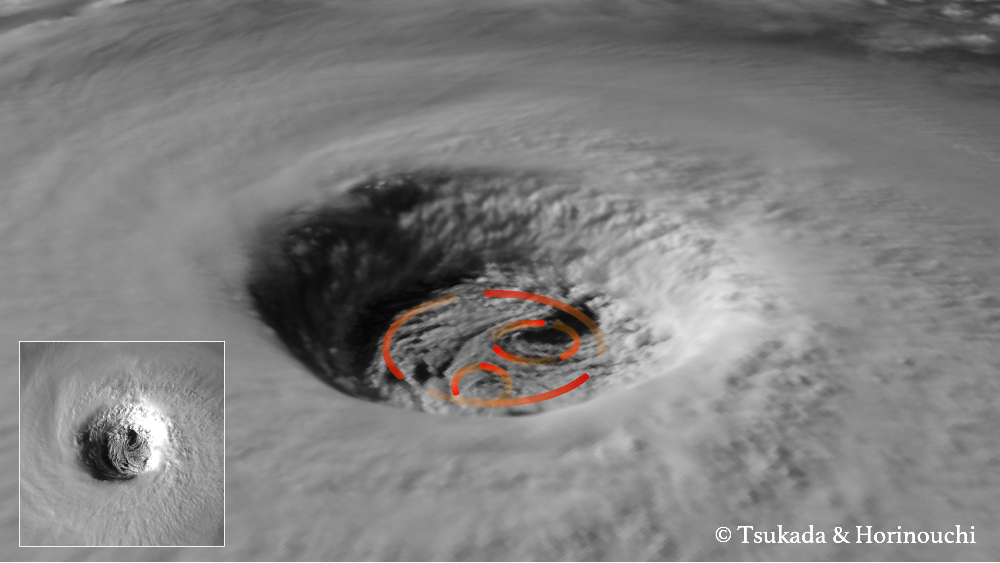

Research Scientist I
Taiga Tsukada
Cooperative Institute for Research in the Atmosphere
Colorado State University

Taiga Tsukada
Contact
- taiga.tsukada🍥colostate.edu
-
CIRA, CSU, Foothills Campus
1375 Campus Delivery
Fort Collins, CO 80523-1375
Affiliations
Tropical Cyclones Group
Cooperative Institute for Research in the Atmosphere
Colorado State University
Academic profile
About My Research
- My research focuses on the internal structure and dynamics of tropical cyclones using primarily satellite observations.
- I aim to improve tropical cyclone forecasts through a better understanding of the inner-core region — the "heart" of a storm.
- I strive to conduct research that is valuable not only scientifically but also applicable to operational forecasting.
